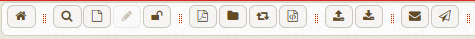
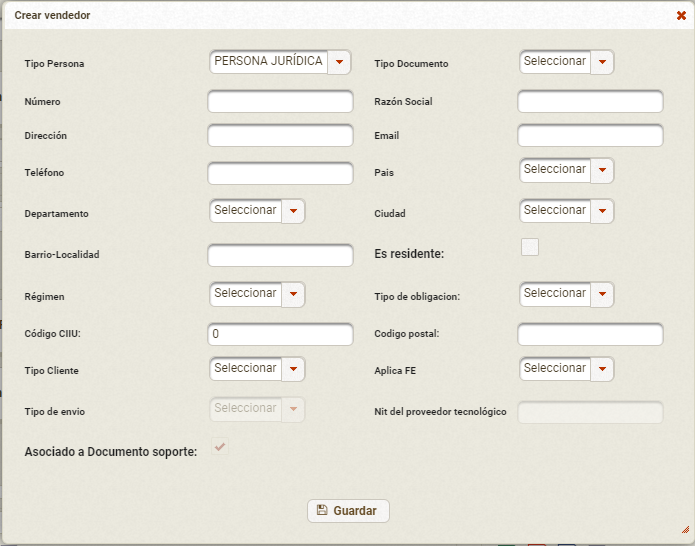

Como crear y consultar un Documento Soporte desde el portal Fact-E
Para crear o consultar algun documento electrónico, debe dirigirse hacia el menú que se encuentra al costado izquierdo, dar click en Menú -> Movimiento -> FEL -> Emisión -> Administrar Facturas
En la barra superior, encontrará varias opciones:

: Ir al inicio
: Buscar documento
: Crear documento
: Editar documento
: Liberar bloqueo de reintentos
: Descargar PDF
: Descargar Contenedor (XML AttachedDocument)
: Descargar Application Response
: Descargar XML
: Subir documentos adjuntos
: Descargar documentos adjuntos
: Reenvío Email
: Envío de documentos
Crear Documento
Para crear el documento debe seleccionar , en el cual aparecerá una pantalla con campos para diligenciar.
para crear el documento soporte, en la primera opción debe seleccionar el Tipo de documento: Documento Soporte seguido de eso se habilitará el prefijo, se seleccionará por defecto el que esté asociado al usuario, sin embargo, puede cambiarlo en caso de ser necesario y utilizar otro profijo para Documento Soporte.
El tipo de Moneda está por defecto en COP, si el documento que va a realizar tiene otro tipo de Moneda, puede elegirlo en la moneda de operación Donde aparecerá una advestencia para llenar dos campos que se habilitarán, TRM y Fecha de la tarifa
Después, podrá seleccionar la información del Vendedor asociado al documento
Puede asociarlo buscandolo o crear uno nuevo, dando click en el botón Crear vendedor y diligenciar la información.
Seguido de esto, puedes empezar a agregar productos, uno a uno. Despues darle click en el botón, calcular subtotales.
Una vez agregados los productos, diligenciar la información de pago y dar click en el botón agregar. Luego en el botón previsualizar podrá ver un resumen del documento.
Una vez en el resumen y confirmar que la información es correcta, podrá dar click en el botón Generar Documento para esperar la validación de la DIAN.
Si por el contrario requiere modificar información antes de generarlo, podrá darle en el botón Cancelar y modificar la información que requiera.
en la parte superior de la creación del documento, podrá:
: Guardar documento, para generarlo después.
: Subir documentos adjuntos
: Agregar Ordenes de Compra
: Campos Adicionales
: Campos Sector Salud* Unicamente para empresas relacionadas al sector salud.
Consultar un documento
En la pantalla inicio, para consultar un documento debes dar click en el icono . La busqueda se puede filtar por Documento
Por estado de Documento:
Por datos de adquiriente
ó para buscar todos los documentos, solo darle en el botón buscar.